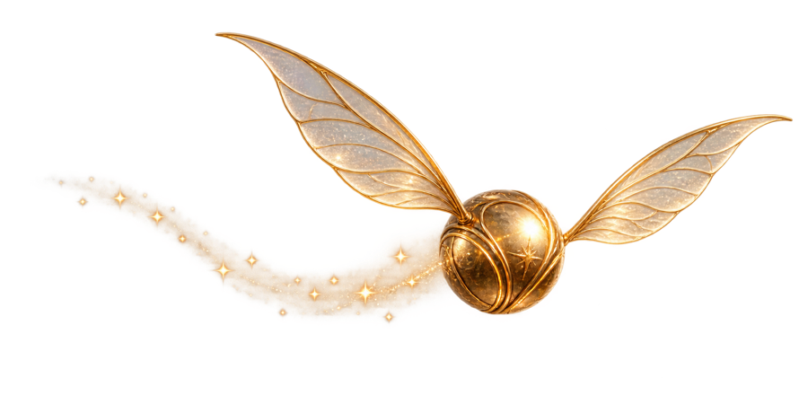

National University of Singapore After hours, somewhere between pages
Weijia Mao
Ph.D. Candidate · Show Lab Mysteries, moving pictures, and coffee chats
Show Lab
National University of Singapore
Email: weijia.mao [at] u.nus.edu
On the job market
I am exploring industry opportunities in multimodal AI and generative models. If I could be a fit for your team, please get in touch. You are also always welcome to reach out for an online or in-person coffee chat.

Biography
I am a fourth-year Ph.D. candidate in Show Lab at NUS, advised by Prof. Mike Zheng Shou. My research focuses on vision-language models, multimodal reinforcement learning, and video generation.
- Large multimodal models: Show-o, BitDance
- Multimodal reinforcement learning: Adv-GRPO, UniRL
- Video and 3D generation: AnyFlow, EgoExo-V, FAR
I was fortunate to intern at TikTok, where I worked with Hao Chen and Zhenheng Yang.
News
- BitDance was accepted to NeurIPS 2026.
- AnyFlow was accepted to ECCV 2026 as an oral presentation.
- Adv-GRPO was accepted to CVPR 2026.
- Released Adv-GRPO, introducing adversarial training into reinforcement learning for image quality optimization.
- Released UniRL, the first work to apply GRPO to unified multimodal models.
- Released FAR, our long-context autoregressive video generation model.
- Released UniMod, an efficient training framework for unified multimodal models.
- Released Show-o, a unified multimodal model combining diffusion and autoregressive modeling.
- EgoExo-V was accepted to NeurIPS 2024.
- Released EgoExo-V, which converts third-person videos into egocentric views using NeRF and video diffusion models.
- Released ShowRoom3D, combining NeRF and diffusion models for 3D scene generation.
- Began my Ph.D. journey at Show Lab at NUS.
- Joined Show Lab at NUS as a master's student.
Selected Publications
Full list on Google Scholar


† Equal contribution. * Corresponding author.
Invited Talks
-
Post-Training for Video Generation: Industrial Applications of Reinforcement Learning and On-Policy Distillation
NVIDIA · Invited by Yuchao Gu
Service
- Conference reviewer: CVPR, ICCV, NeurIPS, ICML, ICLR, and others.
- Teaching assistant: EE4309 Robot Perception.
Beyond Research
Life beyond the lab
Soundtracks and new horizons.
Outside research, I enjoy discovering music, travelling, and exchanging stories over coffee.
Music
What is on repeat, new discoveries, and the songs tied to particular moments.
Travelling
New cities, local food, long walks, and the memorable detours along the way.
Coffee chats are always welcome, online or in person. No formal invitation required.
